The sandbox

FDC3
The open standard that lets desktop apps talk to each other — intents, context, channels.
FDC3 Sail
A desktop-agent sandbox. Apps, and agents, run here.
Fluxnova
Workflows that bring a third party into the loop. Human approval is a process, not a checkbox.